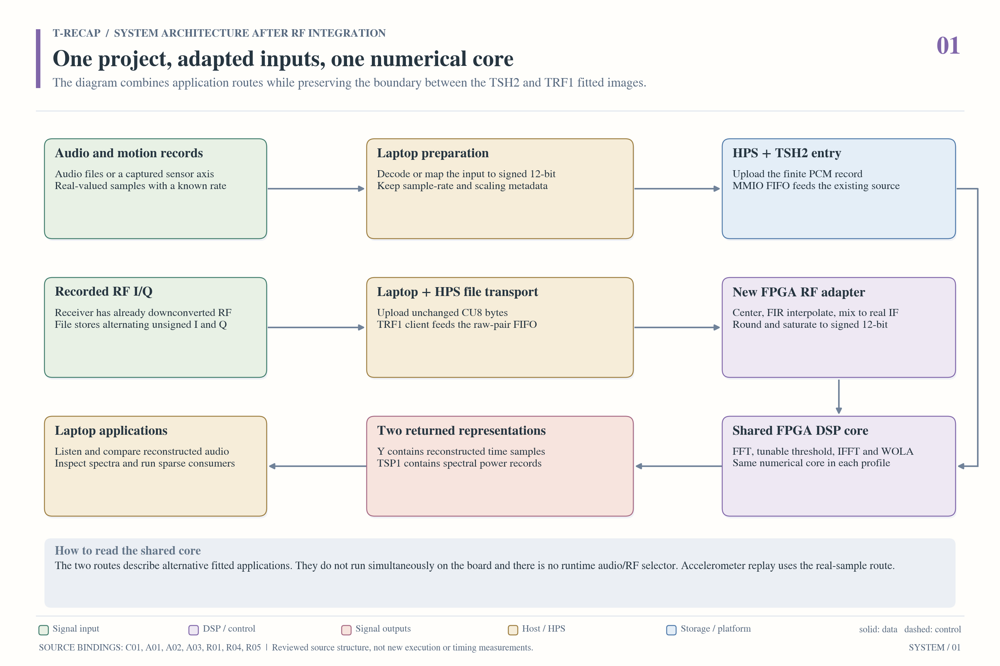
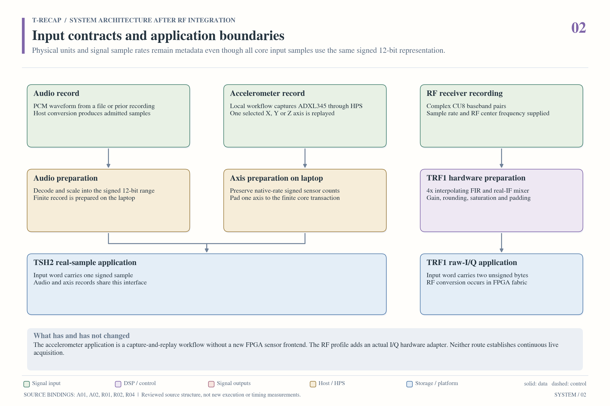
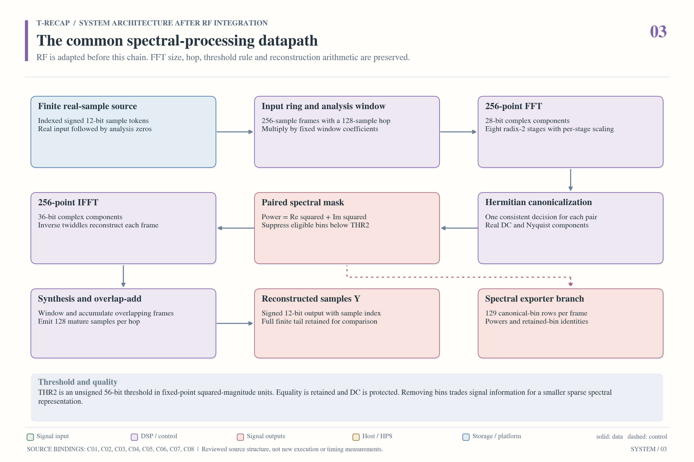
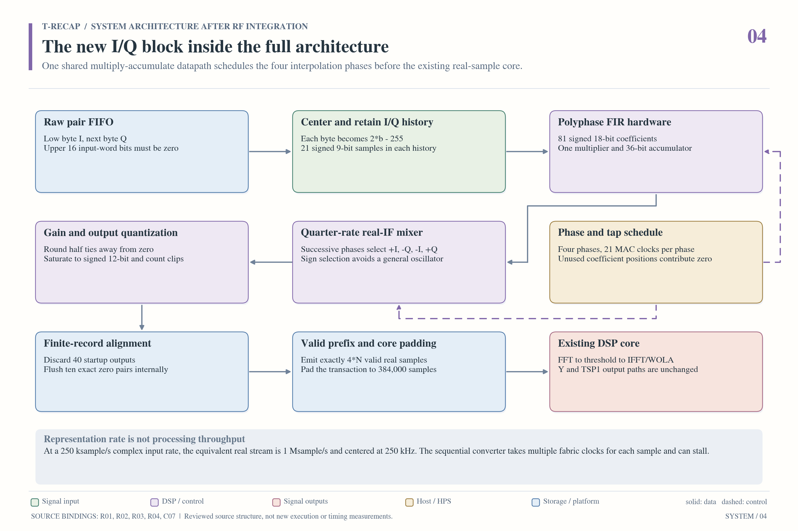
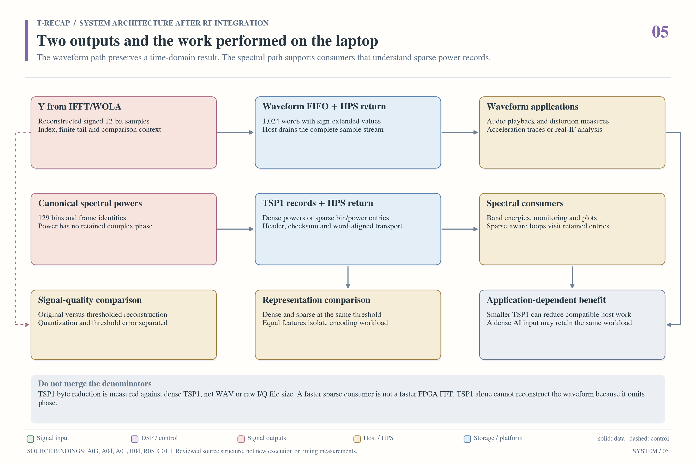
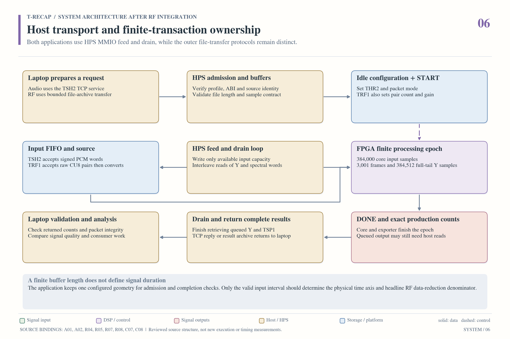
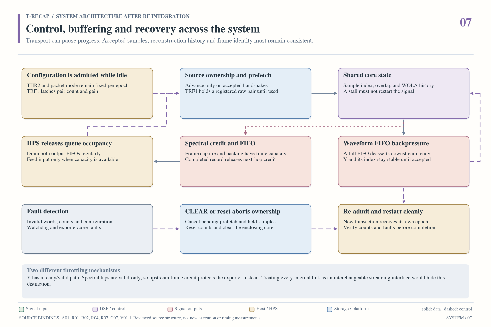
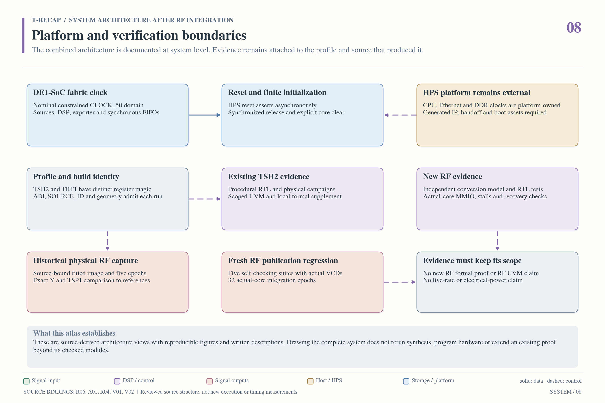

1. One project, adapted inputs, one numerical core
The diagram combines application routes while preserving the boundary between the TSH2 and TRF1 fitted images.

T-RECAP moves a finite signal record into the FPGA, applies a common fixed-point spectral-processing chain, and returns two representations to the laptop. The RF extension changes the input conversion and application interface. It does not replace the FFT, threshold, IFFT or reconstruction arithmetic.
Audio and accelerometer records are real-valued signals. Host software prepares their sample representation before replay through TSH2. Recorded RF is complex baseband I/Q. TRF1 transports its raw CU8 pairs to a new hardware adapter that produces the real signed 12-bit stream expected by the same numerical core.
TSH2 and TRF1 are separate fitted FPGA images. The lines converge to show shared implementation and numerical behavior, not an implemented runtime multiplexer. A host must identify and admit the loaded profile before using its registers.
Block responsibilities and source bindings
| Audio and motion records | Audio files or a captured sensor axis. Real-valued samples with a known rate. |
|---|---|
| Laptop preparation | Decode or map the input to signed 12-bit. Keep sample-rate and scaling metadata. |
| HPS + TSH2 entry | Upload the finite PCM record. MMIO FIFO feeds the existing source. |
| Recorded RF I/Q | Receiver has already downconverted RF. File stores alternating unsigned I and Q. |
| Laptop + HPS file transport | Upload unchanged CU8 bytes. TRF1 client feeds the raw-pair FIFO. |
| New FPGA RF adapter | Center, FIR interpolate, mix to real IF. Round and saturate to signed 12-bit. |
| Laptop applications | Listen and compare reconstructed audio. Inspect spectra and run sparse consumers. |
| Two returned representations | Y contains reconstructed time samples. TSP1 contains spectral power records. |
| Shared FPGA DSP core | FFT, tunable threshold, IFFT and WOLA. Same numerical core in each profile. |
Source bindings: C01, A01, A02, A03, R01, R04, R05.
The two routes describe alternative fitted applications. They do not run simultaneously on the board and there is no runtime audio/RF selector. Accelerometer replay uses the real-sample route.
2. Input contracts and application boundaries
Physical units and signal sample rates remain metadata even though all core input samples use the same signed 12-bit representation.

A common integer interface does not make audio, acceleration and radio signals interchangeable. The sample rate, scaling and original units are needed to label time, frequency and physical amplitude correctly. An eight-second audio label must not be reused for a shorter RF record simply because the buffer length is the same.
The local accelerometer workflow reads the onboard ADXL345 through HPS I2C, records a bounded sample set, selects one axis on the laptop and pads it for TSH2 replay. Its native-rate axis adapter does not resample or remove DC. These acquisition scripts remain a local extension and are identified in the review record rather than presented as a published live FPGA interface.
TRF1 instead accepts one to 96,000 raw I/Q pairs. It generates exactly four valid real samples per pair, then supplies zeros to the 384,000-sample core transaction. The raw RF center frequency is already downconverted by the receiver that produced the file.
Block responsibilities and source bindings
| Audio record | PCM waveform from a file or prior recording. Host conversion produces admitted samples. |
|---|---|
| Accelerometer record | Local workflow captures ADXL345 through HPS. One selected X, Y or Z axis is replayed. |
| RF receiver recording | Complex CU8 baseband pairs. Sample rate and RF center frequency supplied. |
| Audio preparation | Decode and scale into the signed 12-bit range. Finite record is prepared on the laptop. |
| Axis preparation on laptop | Preserve native-rate signed sensor counts. Pad one axis to the finite core transaction. |
| TRF1 hardware preparation | 4x interpolating FIR and real-IF mixer. Gain, rounding, saturation and padding. |
| TSH2 real-sample application | Input word carries one signed sample. Audio and axis records share this interface. |
| TRF1 raw-I/Q application | Input word carries two unsigned bytes. RF conversion occurs in FPGA fabric. |
Source bindings: A01, A02, R01, R02, R04.
The accelerometer application is a capture-and-replay workflow without a new FPGA sensor frontend. The RF profile adds an actual I/Q hardware adapter. Neither route establishes continuous live acquisition.
3. The common spectral-processing datapath
RF is adapted before this chain. FFT size, hop, threshold rule and reconstruction arithmetic are preserved.

The core groups accepted samples into overlapping 256-point frames at a hop of 128. A fixed analysis window precedes the forward FFT. The frame scheduler, ring buffer and output flow control preserve overlap state when transport stalls.
After Hermitian canonicalization, the power comparison produces a conjugate-pair mask. Eligible powers below THR2 are suppressed, equality is retained, and DC is protected. The same thresholded spectrum supplies both reconstruction and spectral export. Threshold values are implementation power units rather than percentages or decibels.
The IFFT and synthesis weighted overlap-add stage return Y. A separate exporter captures 129 canonical power bins per frame for TSP1. The RF profile uses byte-identical shared FFT, IFFT, magnitude-mask, synthesis and top-level numerical core sources.
Block responsibilities and source bindings
| Finite real-sample source | Indexed signed 12-bit sample tokens. Real input followed by analysis zeros. |
|---|---|
| Input ring and analysis window | 256-sample frames with a 128-sample hop. Multiply by fixed window coefficients. |
| 256-point FFT | 28-bit complex components. Eight radix-2 stages with per-stage scaling. |
| 256-point IFFT | 36-bit complex components. Inverse twiddles reconstruct each frame. |
| Paired spectral mask | Power = Re squared + Im squared. Suppress eligible bins below THR2. |
| Hermitian canonicalization | One consistent decision for each pair. Real DC and Nyquist components. |
| Synthesis and overlap-add | Window and accumulate overlapping frames. Emit 128 mature samples per hop. |
| Reconstructed samples Y | Signed 12-bit output with sample index. Full finite tail retained for comparison. |
| Spectral exporter branch | 129 canonical-bin rows per frame. Powers and retained-bin identities. |
Source bindings: C01, C02, C03, C04, C05, C06, C07, C08.
THR2 is an unsigned 56-bit threshold in fixed-point squared-magnitude units. Equality is retained and DC is protected. Removing bins trades signal information for a smaller sparse spectral representation.
4. The new I/Q block inside the full architecture
One shared multiply-accumulate datapath schedules the four interpolation phases before the existing real-sample core.

CU8 contains unsigned I and Q bytes, not amplitude and phase values stored independently. Centering maps each byte to an odd signed integer with the expression 2*b - 255. Exact zero flush samples are inserted after centering because neither unsigned byte 127 nor byte 128 represents exact zero under this convention.
The 81-tap FIR is decomposed into four phases. The schedule uses one multiplier with 21 tap positions per phase and a signed 36-bit accumulator. Even phases read I history and odd phases read Q history. The quarter-rate real-IF sign sequence is applied at successive interpolated times, not as four copies of a raw input pair.
After gain, rounding and saturation, the finite-record wrapper discards startup delay, flushes the FIR and emits exactly 4*N real samples. It then pads the common transaction. The clip count and valid-prefix count remain available to the host so that interpolation, clipping and padding are not mistaken for threshold effects.
Block responsibilities and source bindings
| Raw pair FIFO | Low byte I, next byte Q. Upper 16 input-word bits must be zero. |
|---|---|
| Center and retain I/Q history | Each byte becomes 2*b - 255. 21 signed 9-bit samples in each history. |
| Polyphase FIR hardware | 81 signed 18-bit coefficients. One multiplier and 36-bit accumulator. |
| Gain and output quantization | Round half ties away from zero. Saturate to signed 12-bit and count clips. |
| Quarter-rate real-IF mixer | Successive phases select +I, -Q, -I, +Q. Sign selection avoids a general oscillator. |
| Phase and tap schedule | Four phases, 21 MAC clocks per phase. Unused coefficient positions contribute zero. |
| Finite-record alignment | Discard 40 startup outputs. Flush ten exact zero pairs internally. |
| Valid prefix and core padding | Emit exactly 4*N valid real samples. Pad the transaction to 384,000 samples. |
| Existing DSP core | FFT to threshold to IFFT/WOLA. Y and TSP1 output paths are unchanged. |
Source bindings: R01, R02, R03, R04, C07.
At a 250 ksample/s complex input rate, the equivalent real stream is 1 Msample/s and centered at 250 kHz. The sequential converter takes multiple fabric clocks for each sample and can stall.
5. Two outputs and the work performed on the laptop
The waveform path preserves a time-domain result. The spectral path supports consumers that understand sparse power records.

Y and TSP1 serve different purposes. Y is a reconstructed sample stream that can be turned into a playable waveform for audio or analyzed as a real-valued signal for other applications. TSP1 is a versioned spectral-power representation with bin identities in sparse mode. It does not contain the complex phase required for waveform reconstruction.
For a fair consumer benchmark, dense and sparse records must represent the same thresholded powers. Their feature outputs are compared for equality. A separate comparison against the original signal measures the information lost to thresholding. This separates representation efficiency from signal distortion.
The laptop also performs plotting, playback, packet validation and optional application logic. Archived visualizer code separates a new physical capture from a saved-result load. RF protocol decoding after real-IF recovery remains a host operation. Dense AI consumers do not automatically execute fewer operations when more input bins are zero.
Block responsibilities and source bindings
| Y from IFFT/WOLA | Reconstructed signed 12-bit samples. Index, finite tail and comparison context. |
|---|---|
| Waveform FIFO + HPS return | 1,024 words with sign-extended values. Host drains the complete sample stream. |
| Waveform applications | Audio playback and distortion measures. Acceleration traces or real-IF analysis. |
| Canonical spectral powers | 129 bins and frame identities. Power has no retained complex phase. |
| TSP1 records + HPS return | Dense powers or sparse bin/power entries. Header, checksum and word-aligned transport. |
| Spectral consumers | Band energies, monitoring and plots. Sparse-aware loops visit retained entries. |
| Signal-quality comparison | Original versus thresholded reconstruction. Quantization and threshold error separated. |
| Representation comparison | Dense and sparse at the same threshold. Equal features isolate encoding workload. |
| Application-dependent benefit | Smaller TSP1 can reduce compatible host work. A dense AI input may retain the same workload. |
Source bindings: A03, A04, A01, R04, R05, C01.
TSP1 byte reduction is measured against dense TSP1, not WAV or raw I/Q file size. A faster sparse consumer is not a faster FPGA FFT. TSP1 alone cannot reconstruct the waveform because it omits phase.
6. Host transport and finite-transaction ownership
Both applications use HPS MMIO feed and drain, while the outer file-transfer protocols remain distinct.

The outer transports are not identical. TSH2 exposes a finite TCP request and reply around resident HPS buffers. The RF workflow uploads a bounded archive into HPS RAM, executes a local TRF1 client and downloads a bounded result archive. Neither should be described as a continuous packet-stream radio receiver.
Both clients must identify the loaded application and respect its register contract before issuing input. The HPS interleaves bounded input writes with output reads so that limited FPGA queues do not deadlock the transaction. TRF1 uses a 256-pair raw-input FIFO and registered prefetch rather than treating the FIFO pop as an immediate data response.
The standard core transaction consumes 384,000 real samples. The source additionally owns the analysis-zero tokens and WOLA tail needed for 3,001 frames and 384,512 returned samples. FPGA completion records produced totals. Host retrieval is complete only after any remaining queued output has been drained and checked.
Block responsibilities and source bindings
| Laptop prepares a request | Audio uses the TSH2 TCP service. RF uses bounded file-archive transfer. |
|---|---|
| HPS admission and buffers | Verify profile, ABI and source identity. Validate file length and sample contract. |
| Idle configuration + START | Set THR2 and packet mode. TRF1 also sets pair count and gain. |
| Input FIFO and source | TSH2 accepts signed PCM words. TRF1 accepts raw CU8 pairs then converts. |
| HPS feed and drain loop | Write only available input capacity. Interleave reads of Y and spectral words. |
| FPGA finite processing epoch | 384,000 core input samples. 3,001 frames and 384,512 full-tail Y samples. |
| Laptop validation and analysis | Check returned counts and packet integrity. Compare signal quality and consumer work. |
| Drain and return complete results | Finish retrieving queued Y and TSP1. TCP reply or result archive returns to laptop. |
| DONE and exact production counts | Core and exporter finish the epoch. Queued output may still need host reads. |
Source bindings: A01, A02, R04, R05, R07, R08, C07, C08.
The application keeps one configured geometry for admission and completion checks. Only the valid input interval should determine the physical time axis and headline RF data-reduction denominator.
7. Control, buffering and recovery across the system
Transport can pause progress. Accepted samples, reconstruction history and frame identity must remain consistent.

Ready/valid ownership is local and precise. A producer presenting a valid sample retains its value and sidebands while the consumer is not ready. An input FIFO pop may also have registered latency. TRF1 therefore tracks a pending read and a held prefetched pair explicitly.
The waveform output directly uses backpressure. Spectral observation taps are valid-only, so the surrounding source and exporter enforce next-hop credit to prevent an unbounded accumulation of frames. The HPS must drain both output types because either path can limit progress.
Clear and reset are transaction events, not benign changes to a threshold. They withdraw current output ownership and clear the enclosing pipeline. The RF verification includes reset while a FIFO response is pending, clear while a prefetched pair is held, watchdog recovery and restart checks.
Block responsibilities and source bindings
| Configuration is admitted while idle | THR2 and packet mode remain fixed per epoch. TRF1 latches pair count and gain. |
|---|---|
| Source ownership and prefetch | Advance only on accepted handshakes. TRF1 holds a registered raw pair until used. |
| Shared core state | Sample index, overlap and WOLA history. A stall must not restart the signal. |
| HPS releases queue occupancy | Drain both output FIFOs regularly. Feed input only when capacity is available. |
| Spectral credit and FIFO | Frame capture and packing have finite capacity. Completed record releases next-hop credit. |
| Waveform FIFO backpressure | A full FIFO deasserts downstream ready. Y and its index stay stable until accepted. |
| Fault detection | Invalid words, counts and configuration. Watchdog and exporter/core faults. |
| CLEAR or reset aborts ownership | Cancel pending prefetch and held samples. Reset counts and clear the enclosing core. |
| Re-admit and restart cleanly | New transaction receives its own epoch. Verify counts and faults before completion. |
Source bindings: A01, R01, R02, R04, R07, C07, V01.
Y has a ready/valid path. Spectral taps are valid-only, so upstream frame credit protects the exporter instead. Treating every internal link as an interchangeable streaming interface would hide this distinction.
8. Platform and verification boundaries
The combined architecture is documented at system level. Evidence remains attached to the profile and source that produced it.

The finite processing fabric uses the nominal 50 MHz board clock. HPS-owned clocks, DDR calibration, Ethernet and generated platform IP have their own implementation requirements. Board rebuilds require the matching generated system, pin and timing assignments, handoff files and boot assets in addition to the published non-vendor simulation closure.
Source and interface identity prevent an audio client from accidentally using an RF register map. Physical timing and capture evidence refer to a particular fitted image. Fresh RTL simulation refers to the source and test package it actually executed. A documentation refresh is not a new board measurement.
The preserved TSH2 UVM and formal results retain their documented scope. The RF addition has its own independent numerical reference and five fresh self-checking suites, including 32 actual-core integration epochs. Its historical five-epoch physical qualification is reported separately. The unified diagram does not imply continuous acquisition or full-platform signoff.
Block responsibilities and source bindings
| DE1-SoC fabric clock | Nominal constrained CLOCK_50 domain. Sources, DSP, exporter and synchronous FIFOs. |
|---|---|
| Reset and finite initialization | HPS reset asserts asynchronously. Synchronized release and explicit core clear. |
| HPS platform remains external | CPU, Ethernet and DDR clocks are platform-owned. Generated IP, handoff and boot assets required. |
| Profile and build identity | TSH2 and TRF1 have distinct register magic. ABI, SOURCE_ID and geometry admit each run. |
| Existing TSH2 evidence | Procedural RTL and physical campaigns. Scoped UVM and local formal supplement. |
| New RF evidence | Independent conversion model and RTL tests. Actual-core MMIO, stalls and recovery checks. |
| Historical physical RF capture | Source-bound fitted image and five epochs. Exact Y and TSP1 comparison to references. |
| Fresh RF publication regression | Five self-checking suites with actual VCDs. 32 actual-core integration epochs. |
| Evidence must keep its scope | No new RF formal proof or RF UVM claim. No live-rate or electrical-power claim. |
Source bindings: R06, A01, R04, V01, V02.
These are source-derived architecture views with reproducible figures and written descriptions. Drawing the complete system does not rerun synthesis, program hardware or extend an existing proof beyond its checked modules.